Since I majored in Mathematics, I glossed over many details when I took the initial notes, since the course caters to all levels of students. When I migrated the notes from OneNotes to the web, I updated and reviewed the current course material and at times additional notes by (Chadha2020NLP?) and (Jelliti 2020). I have tried to add my own insights from other sources, books I read or others courses I have taken.
Naïve Bayes
Naïve Bayes is a probabilistic algorithm commonly used in machine learning for classification problems. It’s based on Bayes’ theorem, which is a fundamental concept in probability theory. Naïve Bayes assumes that all the features of the input data are independent of each other, which is why it’s called “naïve.”
Another detail that can help you make sense of this lesson is the following result relating Naïve Bayes to Logistic Regression which we covered last week. In the case of discrete inputs like indicator or frequency features for discrete events, naive Bayes classifiers form a generative-discriminative pair with multinomial logistic regression classifiers: each naive Bayes classifier can be considered a way of fitting a probability model that optimizes the joint likelihood p (C,x), while logistic regression fits the same probability model to optimize the conditional p(C ∣ x).
Theorem—Naive Bayes classifiers on binary features are subsumed by logistic regression classifiers.
Proof
Consider a generic multi-class classification problem, with possible classes {\displaystyle Y \in \{1,\ldots, n\}} , then the non-naive Bayes classifier gives, by Bayes theorem:
We start with a corpus of 20 tweets that we want to categorize as having either positive+ or negative- sentiment, but not both.
Research questions
How can we model our corpus using probability theory?
How can we infer the sentiment of a tweet based on our corpus
Since we can use the sum rule, product rule and Bayes rule which we shall cover shortly to manipulate probabilities we start by representing what we know about our corpus using probabilities.
Probability of a randomly selected tweet’s sentiment
To calculate a probability of a certain event happening, you take the count of that specific event and divide it by the sum of all events.
Furthermore, the sum of all probabilities has to equal 1. If we pick a tweet at random, what is the probability of it being +? We define an event A: “A tweet is positive” and calculate its probability
P(A) = P(+) = \frac{N_{+}}{N}=\frac{13}{20}=0.65
And since probabilities add up to one:
P(-) = 1- P(+)=0.35
Probability for a specific word’s sentiment
Within that corpus, the word happy is sometimes labeled + and in other cases, -. This indicates that some negative tweets contain the word happy. Shown below is a graphical representation of this “overlap”. Let’s explore how we may represent this graphically using a venn diagram and then derive a probability-based representation.
Venn diagram for defining probabilities from events
To compute the probability of 2 events happening like happyand+ in the picture you would be looking at the intersection, or overlap of the two events, In this case, the red and the blue boxes overlap in three boxes, So the answer is:
P(A \cap B) = P(A,B) = \frac{2}{20}
The Event “A is labeled +”, - The probability of events A shown as P(A) is calculated as the ratio between the count of positive tweets and the corpus divided by the total number of tweets in the corpus.
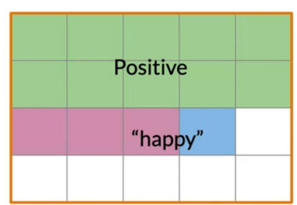 specific tweets color coded per the Venn diagram
Definition of conditional probability
Conditional probability is the probability of an outcome B when we already know for certain that an event A has already happened. Notation:
P(B|A)
and there more + than - more specifically our prior knowledge is that :
\frac{P(+)}{P(−)}=\frac{13}{7}
the likelihood of a tweet with happy being + is
the challenge arises from some words being in both + and - tweets Conditional probabilities help us reduce the sample search space by restricting it to a specific event which is a given. We should understand the difference between P(A|B) and P(B|A)
what is P(+|happy)
We start with the Venn diagram for the P(A|B).
Where we restricted the diagram to just A the subset of happy tweets.
And we just want those tweets that are also + i.e. (B).
all we need is to plug in the counts from our count chart.
which we now estimate
P(A \mid B) = P(Positive \mid happy) = \frac{3}{4} = 0.75
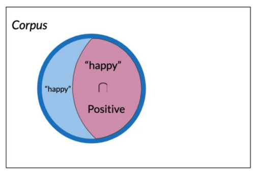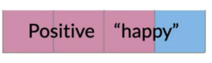
what is P(happy|+)
We start with the Venn diagram for the P(B|A)
where we have restricted the diagram to just B the subset of + tweets.
and we just want from those the tweets that are also happy i.e. (A).
and the counts for P(B|A)
which we now estimate
P(B \mid A) = P(happy \mid Positive) = \frac{3}{13} = 0.231
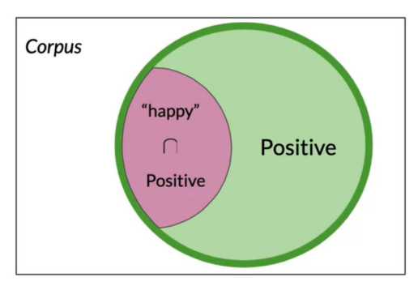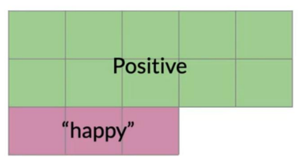
Bayes’ rule
Venn diagram for defining probabilities from events
From this, we can now write:
P(+|happy) = \frac{P(+ \cap happy) }{P(happy)}
and
P(happy|+) = \frac{P(happy \cap +) }{P(+)}
we can combine these since the intersections are the same and we get
Bayes Rule is the rule for inverting conditional probabilities.
However, we gain a deeper insight by considering that Bayes’s rule is more than just a tool for inverting conditional probabilities but the basis of a casual framework for updating our beliefs as we uncover new evidence.
P(e|H) the likelihood (of evidence given the Hypothesis is true).
P(e) the marginal
Naïve Bayes Introduction
Here is a sample corpus
Table 1: And these are the class frequencies and probabilities
+ tweets
- tweets
I am happy because I am learning NLP
I am sad, I am not learning NLP
I am happy
I am sad
import pandas as pdimport string raw_tweets=["I am happy because I am learning NLP","I am sad, I am not learning NLP","I am happy, not sad","I am sad, not happy",]def clean(tweet:str):return tweet.translate(str.maketrans('', '', string.punctuation)).lower()tweets = [clean(tweet) for tweet in raw_tweets]labels=['+','-','+','-']df = pd.DataFrame({'tweets': tweets, 'labels': labels})df
tweets
labels
0
i am happy because i am learning nlp
+
1
i am sad i am not learning nlp
-
2
i am happy not sad
+
3
i am sad not happy
-
import numpy as npfrom collections import Counterp_freq,n_freq = Counter(), Counter()#print( df[df.labels == '+']['tweets'].to_list())[p_freq.update(tweet.split()) for tweet in df[df.labels =='+']['tweets'].to_list()][n_freq.update(tweet.split()) for tweet in df[df.labels =='-']['tweets'].to_list()]print(p_freq)print(n_freq)vocab =list(set(p_freq.keys()).union(set(n_freq.keys())))pos_freq = [p_freq[word] for word in vocab ]neg_freq = [n_freq[word] for word in vocab ]vocab_df=pd.DataFrame({'vocab':vocab,'pos_freq':pos_freq,'neg_freq':neg_freq})vocab_df['p_pos']=vocab_df.pos_freq/vocab_df.pos_freq.sum()vocab_df['p_neg']=vocab_df.neg_freq/vocab_df.neg_freq.sum()vocab_df['p_pos_sm']=(vocab_df.pos_freq+1)/(vocab_df.pos_freq.sum()+vocab_df.shape[1])vocab_df['p_neg_sm']=(vocab_df.neg_freq+1)/(vocab_df.neg_freq.sum()+vocab_df.shape[1])vocab_df['ratio']= vocab_df.p_pos_sm/vocab_df.p_neg_smvocab_df['lambda']= np.log(vocab_df.p_pos_sm/vocab_df.p_neg_sm)pd.set_option('display.float_format', '{:.2f}'.format)vocab_dfprint(vocab_df.shape)
p(+|T) is the posterior probability of a label + given tweet T
p(+) is our prior knowledge
p(T|+) is the likelihood of tweet T being +.
{p(T)}
The term p(T) is in both terms and can be eliminated. However, it will cancel out when we use the ratio for the inference. This lets us compute the following table of probabilities; word am learning NLP Pos 0.24 0.08 0.08 Neg 0.25 0.08 0.08 .17 Naïve Bayes is the simplest probabilistic graphical model which comes with an independence assumption for the features.
Once you have the probabilities, you can compute the likelihood score as follows:
Tweet: I am happy today: I am learning. - Since there is no entry for today in our conditional probabilities table, this implies that this word is not in your vocabulary. So we’ll ignore its contribution to the overall score. - All the neutral words in the tweet such as I and am cancel out in the expression, as shown in the figure below.
A score greater than 1 indicates that the class is positive, otherwise, it is negative.
P(+|T) > P(−|T)
then we infer that the T has + sentiment. dividing by the right term we get the inference rule:
\frac{P(+|T)}{P(−|T)} > 1
which expands to :
\frac {P(+|T)}{P(−|T)} = \frac {P(+)}{P(-)}\prod^m_{i=1} \frac {P(w_i|+)}{P(w_i|−)} > 1
This is the inference rule for naïve Bayes.
Note: Naïve Bayes is a model which assumes all features are independent, so the basic component here is:
\frac{P(w_i|+)}{P(w_i|-)} > 1
the ratio of the probability that a word appears in a positive tweet and that it appears in a negative tweet
Laplace smoothing
Smoothing
A probability distribution can take zero values at certain points i.e. for certain inputs. Smoothing is a family of techniques for improving our estimate of conditional class probabilities to estimate probabilities for missing words. The name smoothing comes from the fact that these techniques tend to make distributions more uniform, by adjusting low probabilities such as zero probabilities upward, and high probabilities downward. Not only do smoothing methods generally prevent zero probabilities, but they also attempt to improve the accuracy of the model as a whole. Whenever a probability is estimated from a few counts, smoothing has the potential to improve estimation.
The course introduces smoothing here since sparsity breaks the naive Bayes model. But smoothing and filtering are big topics in NLP and Data Science. I have added some extra info drawn from (Jurafsky and Martin 2000)
Laplace smoothing also called add one smoothing replaces a distribution with zero probabilities (due to sparse data) with a distribution that steals some mass and spreads it over the points which were zero. It solves the data sparsity issue but Laplace smoothing will skew/bias the probabilities (it affects rare and common probabilities differently) giving you behavior that is hard to explain, as it assigns too much mass to unknown words. When we compute the conditional probability P(w|class) using:
P(w_i|class) = \frac{freq(w_i,class)}{N_{class}} \qquad class \in \{ +, -\}
If a word does not appear in the training corpus or is missing from one of the classes then its frequency is 0 so it gets a probability of 0. Since we are taking products of probabilities, and soon we will take logs of probabilities and zeros present us with a numerical problem that we can address using smoothing as follows:
N_{class} is the frequency of all words in a class.
V is unique words in the vocabulary
Note: that we added a 1 in the numerator and since there are |V| words to normalize we add |V| in the denominator so that all the probabilities sum up to 1.
To compute the likelihood, we need to get the ratios and use them to compute a score that Will allow us to decide if a tweet is positive or negative.
The higher the ratio, the more positive the word.
Long Products of small probabilities create a risk of numeric underflow.
logs let us mitigate this risk.
\lambda(w) = \log \frac{p(w|+)}{p(w|-)}
\log prior = \log \frac{p(+)}{p(-)}
Where D_{+} and D_{-} correspond to the number Of negative documents respectively.
Training Naïve Bayes
To train a naïve Bayes classifier, we should perform the following steps:
Get or annotate a dataset with positive and negative tweets
preprocess the tweets.
Tokenize sentences
Remove punctuation, URLs and names
Remove stop words
Stem words
Compute the vocabulary: freq(word, class)
Use Laplacian smoothing to estimate word class probabilites P(w|+) and P(w|-).
Compute \lambda(w) = \log \frac{p(w|+)}{p(w|-)}
Compute \log(prior) = \log \frac{p(w|+)}{p(w|-)} Where D_{+} and D_{-} correspond to the number Of negative documents respectively.
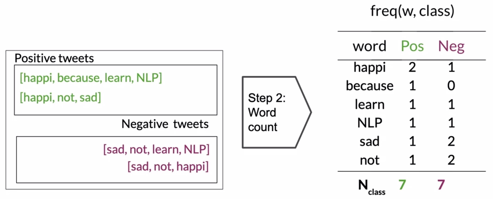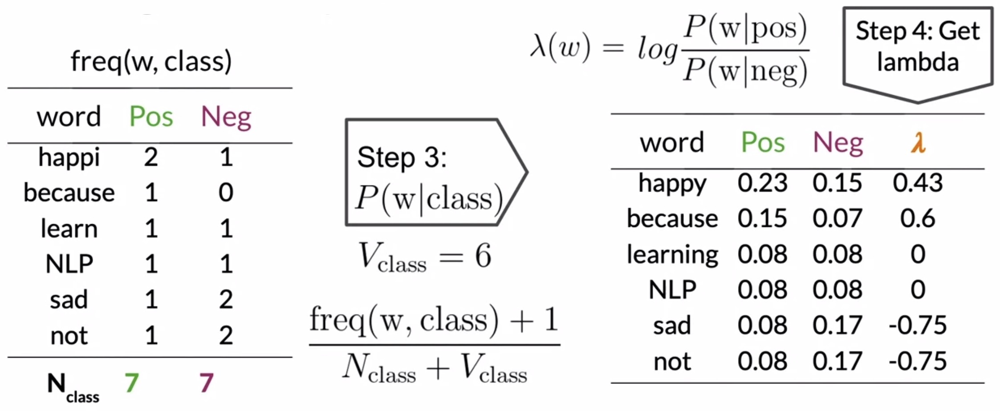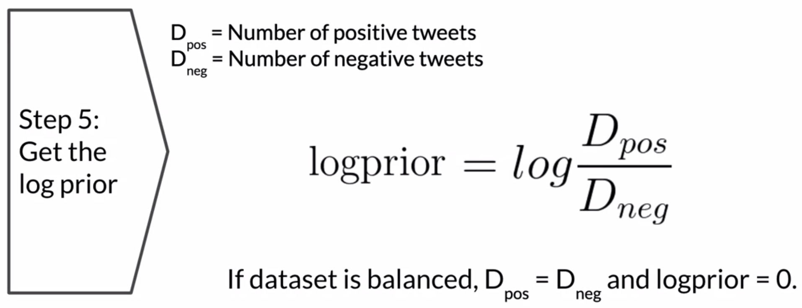
Testing Naïve Bayes
Inference
Let’s work on applying the Naïve Bayes classifier on validation examples to compute the model’s accuracy. The steps involved in testing a Naïve Bayes model for sentiment analysis are as follows:
Use the validation set to test the model on tweets it has not seen. Which is comprised of a set of raw tweets X_{val}, and their corresponding sentiments, Y_{val}.
We use the conditional p(word|state) and use them to predict the sentiments of new unseen tweets,
We apply Pre-processing: as before in training.
Lookup the \lambda score for each unique word: Using the \lambda table (i.e., the log-likelihood table).
Words that have entries in the table, are summed over all the corresponding \lambda terms.
Unknown words are skipped as words that lack a log-likelihood in the table are considered neutral.
Obtain the overall score by summing up the scores of all the individual words, along with with our estimation of the log prior (important for an unbalanced dataset), we get the overall sentiment score of the new tweet.
Check against the threshold we check if the sentiment score >0 . Let’s consider an example tweet, "I passed the NLP interview", and use our trained model to predict if this is a positive or negative tweet:
Look up each word from the vector in your log-likelihood table. Words such as “I”, “pass”, “the”, and “NLP”, have entries in the table, while the word interview does not (which implies that it needs to be ignored). Now, add the log before accounting for the imbalance of classes in the dataset. Thus, the overall score sums up to 0.48, as shown in the figure below.
Recall that if the overall score of the tweet is larger than 0, then this tweet has a positive sentiment, so the overall prediction is that this tweet has a positive sentiment. Even in real life, passing the NLP interview is a very positive thing.
Naïve Bayes Applications
There are many applications of naïve Bayes including:
Author identification
Spam filtering
Information retrieval
Word disambiguation
This method is usually used as a simple baseline.
It is also really fast.
Naïve Bayes Assumptions
Naïve Bayes makes the independence assumption and is affected by the word frequencies in the corpus. For example, if you had the following "It is sunny and hot in the Sahara desert." `“It’s always cold and snowy in …”` In the first image, you can see the word sunny and hot tend to depend on each other and are correlated to a certain extent with the”desert”, Naïve Independence throughout,
Furthermore, if you were to fill in the sentence on the right. this naïve model will assign equal weight to the words :
spring.
summer,
fall,
winter,
Relative frequencies in the corpus On Twitter, there are usually more positive tweets than negative ones However, some clean datasets are artificially balanced to have the same amount of positive and negative tweets. Just keep in mind, that in me real world. the data could be much noisier.
Sources of Errors in Naïve Bayes
Error Analysis
Bad sentiment classifications are due to:
preprocessing dropping punctuation that encodes emotion like a sad smiley.
Word order can contribute to meaning - breaking the independence assumption of our model
Pronouns removed as stop words - may encode emotion
Sarcasm can confound the model
Euphemisms are also a challenge
References
Chen, Stanley F., and Joshua T. Goodman. 1996. “An Empirical Study of Smoothing Techniques for Language Modeling.”https://arxiv.org/abs/cmp-lg/9606011.
Good, I. J. 1953. “The Population Frequencies of Species and the Estimation of Population Parameters.”Biometrika 40 (3-4): 237–64. https://doi.org/10.1093/biomet/40.3-4.237.
Jurafsky, D., and J. H. Martin. 2000. Speech and Language Processing: An Introduction to Natural Language Processing, Computational Linguistics, and Speech Recognition. Prentice Hall Series in Artificial Intelligence. Prentice Hall. https://books.google.co.il/books?id=85BvQgAACAAJ.
Ney, Hermann, Ute Essen, and Reinhard Kneser. 1994. “On Structuring Probabilistic Dependences in Stochastic Language Modelling.”Computer Speech & Language 8 (1): 1–38. https://doi.org/https://doi.org/10.1006/csla.1994.1001.
Citation
BibTeX citation:
@online{2020,
author = {},
title = {Probability and {Bayes} {Rule}},
date = {2020-10-23},
url = {https://orenbochman.github.io/notes-nlp/posts/c1w2/},
langid = {en}
}
 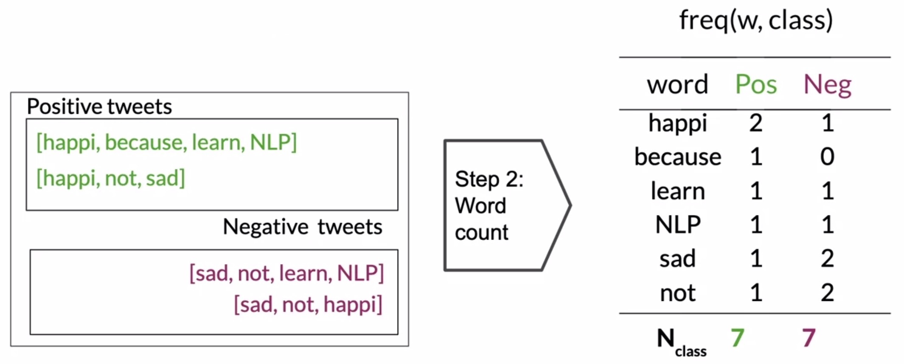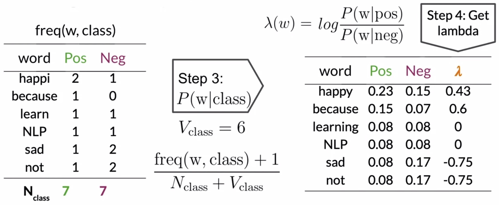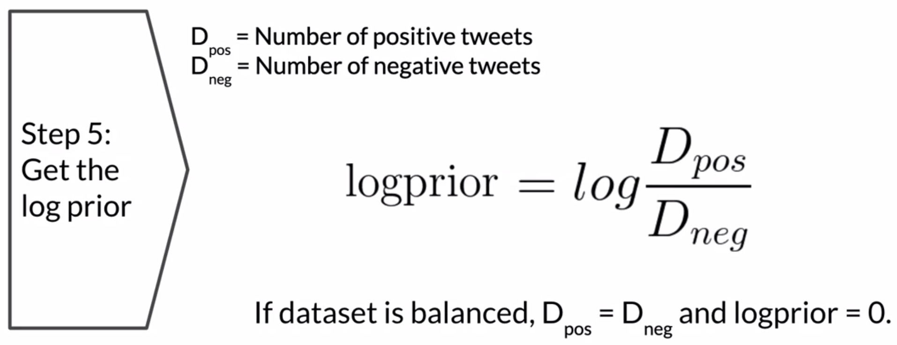
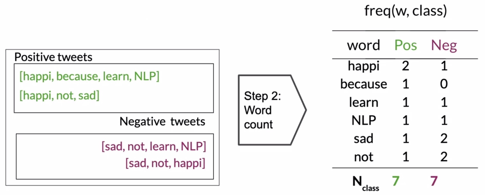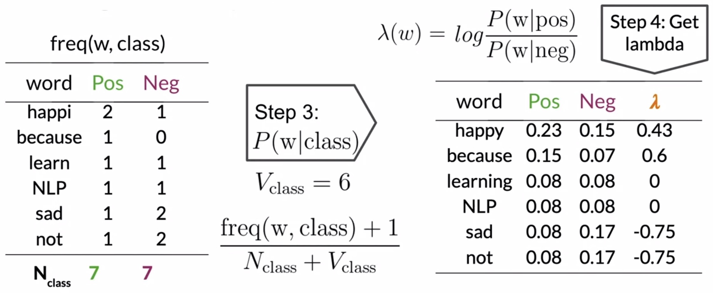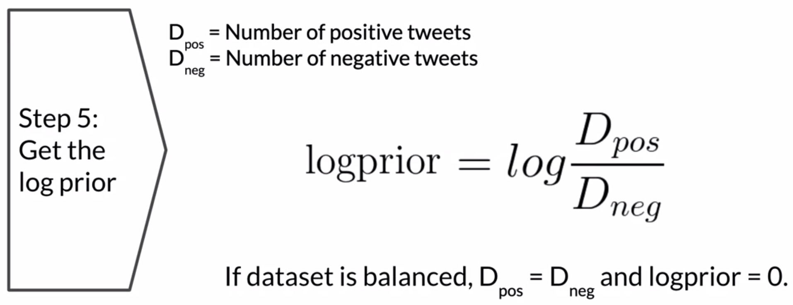
{kind=link}
{kind=link}
{kind=link}
{kind=link}
{kind=link}
{kind=link}
{kind=link}